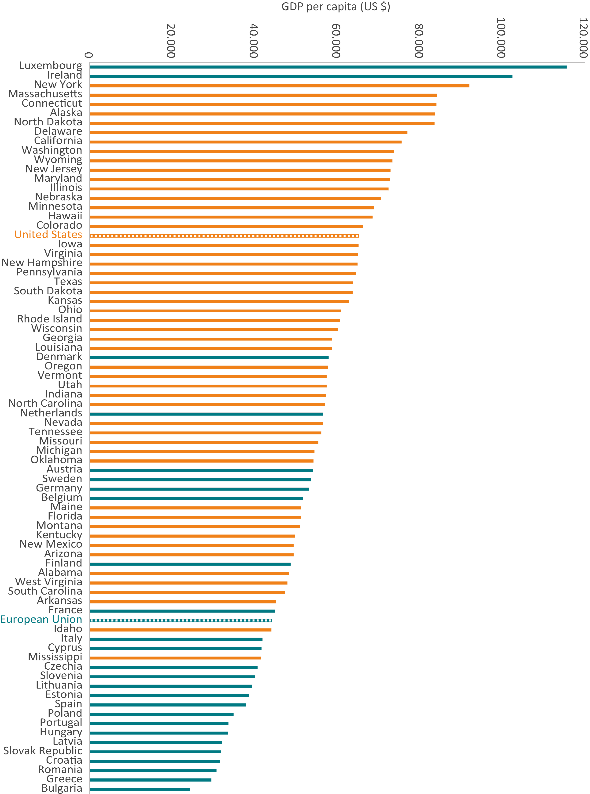

1 Inleiding
De snelle technologische vooruitgang veroorzaakt een geopolitieke verschuiving die de verhoudingen tussen Europa, de Verenigde Staten en Azië fundamenteel herschikt. De grafieken in Figure 1.1 en Figure 1.2 laten een verandering in het wereldwijde krachtenveld zien. Waar in 2004 de Amerikaanse en Europese bedrijven de kapitaalmarkten domineerden, is in 2024 de opkomst van Aziatische bedrijven ten koste van Europese onmiskenbaar.
Naast de sterk toegenomen regionale concentratie van kapitaal heeft ook binnen sectoren een verschuiving plaatsgevonden en hebben technologiebedrijven een dominante positie ingenomen. Dit markeert een significante verschuiving in economische macht en technologisch leiderschap, waarbij Europa een duidelijke positie heeft verloren: van de 50 grootste technologiebedrijven wereldwijd komen er momenteel nog maar vier uit de EU (“EU Competitiveness: Looking Ahead - European Commission” n.d.). Deze verschuiving is cruciaal om de geopolitieke dynamiek rondom AI te begrijpen, omdat de ontwikkeling en toepassing ervan sterk afhankelijk zijn van de investeringen en innovaties die door deze mondiale economische spelers worden aangedreven.
Europa’s achterblijvende concurrentiepositie is duidelijk zichtbaar in de reële economie, vooral in vergelijking met de VS. Vergelijkingen van de EU met Amerikaanse staten tonen dat de gemiddelde economische prestaties van de EU ver achterblijven. Alleen Luxemburg en Ierland blijken in staat te zijn het Amerikaanse gemiddelde te overstijgen. Sinds 2000 zakten 14 EU-lidstaten, waaronder Duitsland, Frankrijk en Italië, op deze ranglijst. Hoewel Centraal- en Oost-Europese landen sterk groeien, is dit te weinig om de algemene trend van relatieve achteruitgang te keren. Dit benadrukt de noodzaak van een krachtiger Europees economisch beleid en een heroverweging van de interne concurrentiekracht, vooral om in het AI-tijdperk een gelijkwaardige positie ten opzichte van de VS te behouden.

Lesactiviteit - Het geopolitieke schaakbord van AI: Europa en Nederland
Doel van de sessie: Samen onderzoeken hoe AI de geopolitieke verhoudingen in Europa en Nederland beïnvloedt. De bevindingen van deze sessie vormen de basis voor het maken van AI-roadmaps in deze Masterclass.
Tijd: 45 minuten
Werkwijze:
- Introductie (5 minuten)
- We bespreken kort waarom de geopolitieke context van AI belangrijk is en hoe dit invloed heeft op Europa en Nederland.
- Groepsopdracht - Brainstorm (15 minuten)
- Jullie werken in kleine groepjes (3-4 personen).
- Ieder groepje krijgt een specifieke ‘lens’ (invalshoek) toegewezen om naar de geopolitieke impact van AI te kijken. Deze invalshoeken zijn:
- Economische concurrentie
- Technologische soevereiniteit
- Nationale veiligheid
- Sociale en ethische implicaties
- Economische concurrentie
- Noteer de belangrijkste punten (bijvoorbeeld op een whiteboard of digitaal).
- Jullie werken in kleine groepjes (3-4 personen).
- Korte presentaties (5 minuten)
- Elk groepje presenteert in 2-3 minuten de belangrijkste inzichten die jullie tijdens de brainstorm hebben verzameld.
- Discussie en Synthese (15 minuten)
- We gaan met de hele groep in gesprek over jullie bevindingen.
- Denk bij de discussie aan vragen als:
- Waar staat Europa nu op het gebied van AI?
- Welke kansen en bedreigingen zien jullie voor Europa en specifiek voor Nederland?
- Welke vragen moeten vanuit de verschillende lensen worden meegenomen om tot een goede AI-roadmap te komen?
- Waar staat Europa nu op het gebied van AI?
- We gaan met de hele groep in gesprek over jullie bevindingen.
- Afronding (5 minuten)
- We vatten samen welke inzichten we hebben opgedaan en hoe deze terugkomen in de AI-roadmaps.
- We kijken vooruit naar de volgende stappen in de Masterclass.
- We vatten samen welke inzichten we hebben opgedaan en hoe deze terugkomen in de AI-roadmaps.
Verwachtingen voor jullie als deelnemers:
- Actief meedoen aan discussies en brainstorms.
- De verstrekte bronnen bestuderen en meenemen in je gesprekken.
- Kritisch nadenken over Europa’s en Nederland’s positie in het wereldwijde AI-landschap.
- De opgedane inzichten gebruiken voor het ontwikkelen van je eigen AI-roadmap.
1.1 Aanvullend inspiratiemateriaal
1.1.1 Video: Tech Titans at War: The US-China Innovation Race with Jimmy Goodrich
De podcast bespreekt de dynamiek van de technologische competitie tussen de Verenigde Staten en China, met nadruk op strategische technologieën zoals AI en halfgeleiders. Het benadrukt hoe China evolueert van een “copycat” naar een innovatieve leider, terwijl het grote investeringen doet in fundamenteel onderzoek en technologische ontwikkeling. Daarnaast belicht het de impact van beleidsmaatregelen, zoals exportcontroles, en de verschillen in benadering tussen de VS en China wat betreft industriële strategieën. Ten slotte wordt de rol van samenwerking in wetenschappelijk onderzoek besproken, naast de geopolitieke uitdagingen van concurrentie in opkomende technologieën (“(150) Tech Titans at War: The US-China Innovation Race with Jimmy Goodrich - YouTube” n.d.).
1.1.2 Report: ASPI’s Critical Technology Tracker
Deze Tracker, opgesteld door het Australian Strategic Policy Institute (ASPI), bevat een dataset over een periode van 21 jaar (2003–2023) waarin onderzoek is gedaan naar publicaties over 64 kritieke technologieën met een grote impact. De analyse richt zich op het mondiale onderzoeksleiderschap en de prestaties van verschillende instellingen.
Een van de belangrijkste bevindingen wijst op de aanzienlijke voorsprong die China de afgelopen twee decennia heeft opgebouwd op het gebied van onderzoeksleiderschap, waarmee het in veel essentiële technologieën – met name die met militaire toepassingen – de Verenigde Staten heeft ingehaald.
Het rapport onderzoekt langetermijntrends, beoordeelt het risico van technologische monopolies (vooral rond de dominantie van China) en bevat diepgaande analyses van specifieke technologieën. Hierdoor biedt het zowel nationaal als institutioneel inzicht in de huidige stand van zaken en in prognoses voor toekomstig onderzoek.
Uiteindelijk is het doel van het rapport om beleids- en investeringsbeslissingen te ondersteunen door empirische gegevens te verstrekken over het mondiale technologische leiderschap en de consequenties daarvan (Cave n.d.).